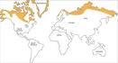
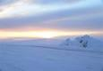
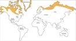
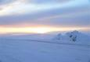

Tundra Climate - Blue Planet Biomes
www.blueplanetbiomes.org/tundra_climate_page.htm
Average precipitation per season is 4.5 inches. The type of precipitation that falls in this climate is mostly snow in the winter, and in the summer it is rain, with occasional snow. The latitude range for the tundra is from the arctic circle to 60° to 70° latitude North.
Tundra climate
ths.sps.lane.edu/biomes/tundra4/tundra4c.html
TUNDRA. Welcome to the Tundra's climate page. Here you can find information on the climate of the Tundra. Tundra landscape. The winter temperatures ...
Tundra -- National Geographic
environment.nationalgeographic.com/environment/habitats/tundra-profile/
Tundras are among Earth's coldest, harshest biomes. Tundra ecosystems are treeless regions found in the Arctic and on the tops of mountains, where the climate is cold and windy and rainfall is scant. Tundra lands are snow-covered for much of the year, until summer brings a burst of wildflowers.
Tundra Climate
www.ri.net/schools/West_Warwick/manateeproject/Tundra/climate.htm
The tundra is the coldest biome in the world. The temperature rarely gets above -18 degrees F (-8 degrees C). In June it can sometimes reach a balmy 50 ...
Tundra - Climate Types for Kids - Sites - Google
https://sites.google.com/site/climatetypes/tundra
Tundra climate is usually found between the 60-75 degree latitude lines. Tundra climate is mainly found along the coast of the Arctic Ocean. Tundra is a ...
Tundra - Wikipedia
https://en.wikipedia.org/wiki/Tundra
Jump to Climatic classification - Tundra climates ordinarily fit the Köppen climate classification ET, signifying a local climate in which at least one month ...
tundra climate | Britannica.com
https://www.britannica.com/science/tundra-climate
Mar 14, 2016 - Tundra climate, major climate type of the Köppen classification characterized by sub-freezing mean annual temperatures, large annual ...
What is the climate of the tundra? | Reference.com
https://www.reference.com › Science › Environmental Science
Tundras have cold, windy climates with low levels of rainfall. Snow is nearly always on the ground, except during summer. The latitudinal range of the tundra is ...
Searches related to tundra climate
- ice cap climate
- tundra precipitation
- tundra location
- tundra plants and animals
- tundra soil
- tundra climate facts
- tundra temperature
- tundra vegetation
|
1 |
2 |
3 |
4 |
5 |
6 |
7 |
8 |
9 |
10 |
Next |
 


